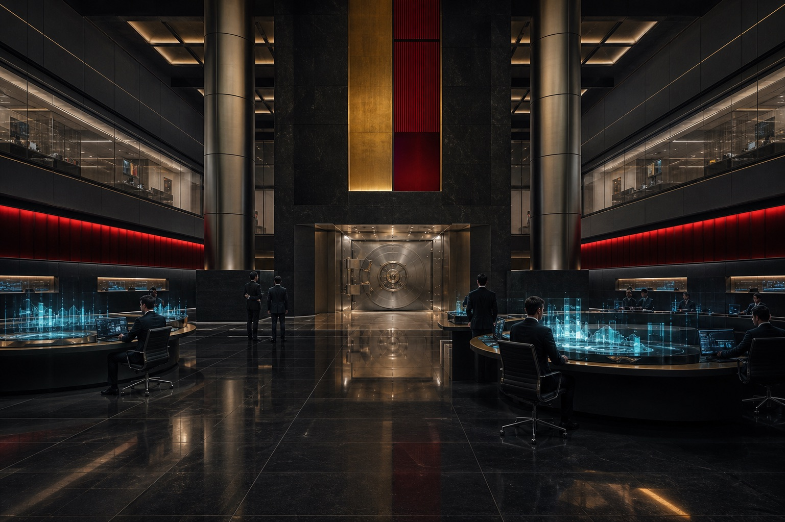

More than a century of family enterprise, industrial development, and institutional service.
 荒坂株式会社
荒坂株式会社
Return to corporate home
ARASAKA CORPORATE GOVERNANCE
STEWARDSHIP / OVERSIGHT / ACCOUNTABILITY
Stewardship measured in generations.
The Chairman's Office, Family Council, and Group Board govern long-term strategy, succession, sovereign relations, capital allocation, and controlled technology deployment.

Long-term family stewardship aligns capital, succession, and group strategy across generations.
Regional companies remain accountable to shared group standards and local obligations.
Governance Framework
One group, governed across generations and jurisdictions.
Arasaka combines family stewardship with group-level oversight, accountable operating companies, disciplined risk management, and defined responsibility for advanced technology.
GOV-01
Group Stewardship
The Chairman's Office and Group Board set long-term direction, allocate capital, and preserve the integrity of the enterprise.
Learn more GOV-02
GOV-02
Risk & Assurance
Group standards govern security, resilience, legal compliance, and escalation across regional companies and client programs.
Learn more
GOV-03Capital Discipline
Investment, treasury, and institutional custody decisions are governed for durability, confidentiality, and accountable authority.
Learn more GOV-04
GOV-04
Responsible Innovation
Advanced research is governed through defined human authority, use boundaries, technical validation, and lifecycle accountability.
Learn more GOV-05
GOV-05
Regional Accountability
Operating companies combine local leadership and jurisdictional responsibility with shared group standards and capabilities.
Learn more
Group Governance
Stewardship connects ownership, strategy, operating companies, and client responsibility.
The group governance model preserves long-term direction while assigning clear responsibility to the leaders, companies, and specialists closest to each market.